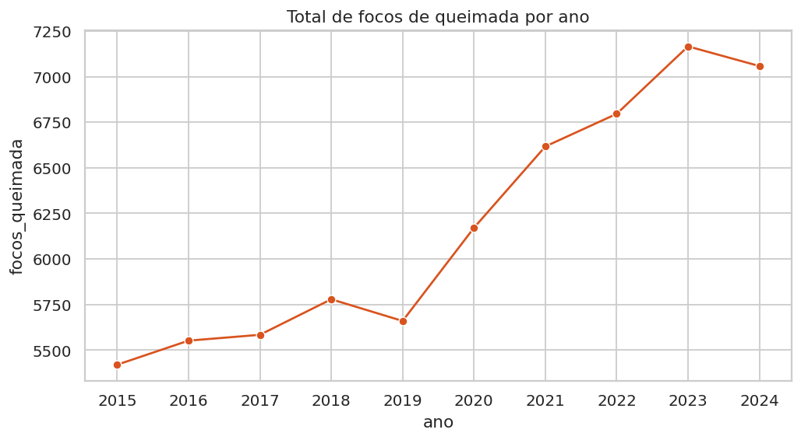
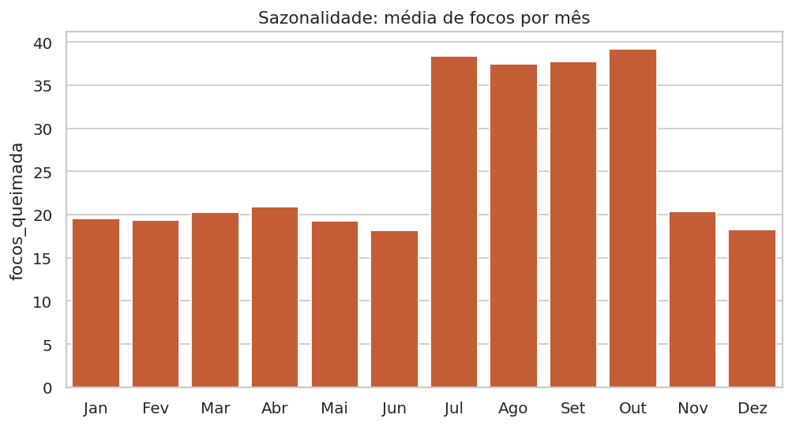
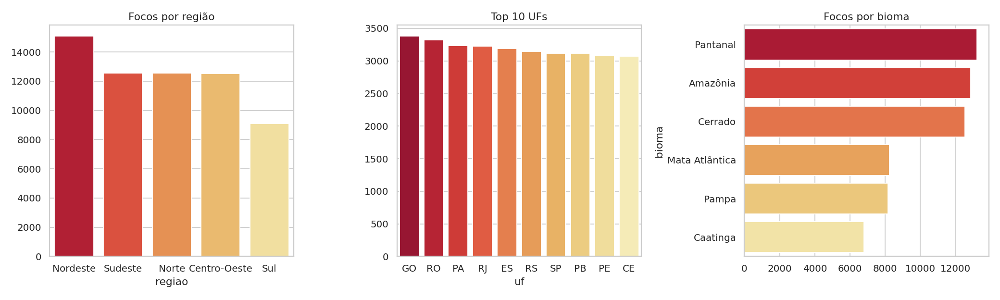
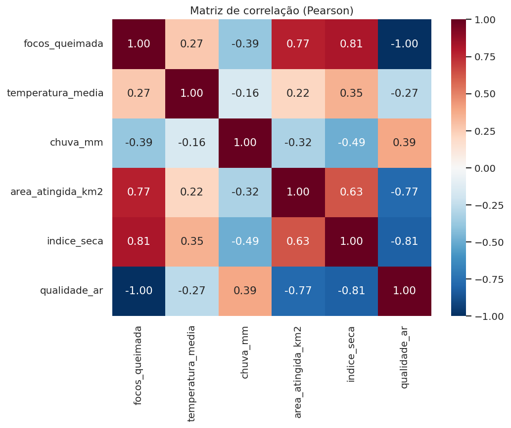
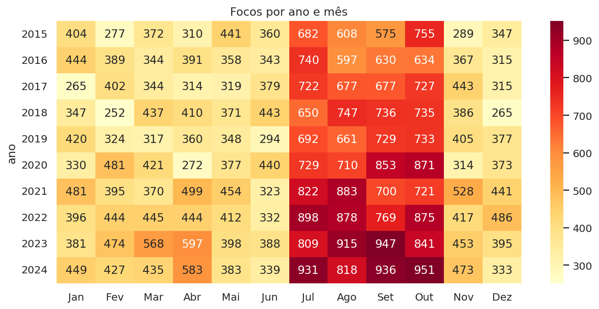

O problema
Queimadas afetam biodiversidade, saúde e economia. O projeto investiga em uma base simulada de 20 UFs, entre 2015 e 2024, quais regiões, biomas e épocas concentram mais focos e quais variáveis (temperatura, chuva, seca, qualidade do ar) estão associadas a eles.
Indicadores principais
61.803
focos de queimada no período
+30%
crescimento de focos 2015 → 2024
2×
focos médios de jul–out vs. demais meses
0,81
correlação seca × focos
Resultados





Conclusão
Os focos crescem, concentram-se no período seco e estão mais ligados à seca e à pouca chuva do que à temperatura. Prevenção e brigadas devem ser reforçadas de julho a outubro, e o índice de seca é um bom indicador antecipado de risco.
Limitações: base simulada; o bioma não corresponde ao real de cada UF; nível de risco e qualidade do ar derivam do número de focos.